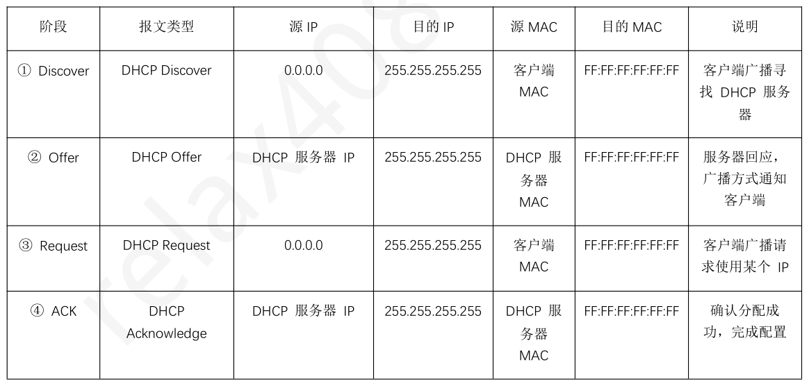
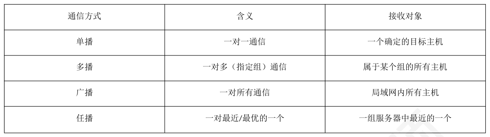

第 1 题
下列关于客户/服务器（C/S）模型的叙述中，正确的是？
- A．客户端程序和服务器程序必须运行在不同的主机上。
- B．一个服务器进程只能同时为一个客户端进程提供服务。
- C．服务器必须在通信开始前启动并运行，被动等待连接。
- D．客户端之间可以直接通信，以分担服务器的压力。
答案与解析
答案：C
在C/S 模型中，客户和服务器指通信中所涉及的两个应用进程，它们完全可以运行在同一台主机上。例如，在本机开发网站时，浏览器（客户端）和Web 服务器（服务器）就在同一台机器上，故A 错误。为了提高效率，服务器通常是并发服务器，可通过多进程或多线程技术同时为多个客户端提供服务，故B 错误。客户端之间直接通信是P2P 模型的特征。在C/S 模型中，客户端之间的通信需要通过服务器作为中介，故D 错误。服务器作为服务提供方，必须首先启动并进入监听状态，被动地等待客户端发起服务请求，因此会在通信开始前启动并运行，故C 正确。
第 2 题
关于C/S 模型和P2P 模型的比较，下列叙述中正确的是？
- A．C/S 模型比P2P 模型具有更好的可扩展性，能轻松应对大量用户的并发请求。
- B．P2P 模型仅适用于文件传输，不能用于流媒体或即时通信。
- C．电子邮件的实现依靠一对计算机（即对等方）直接互相通信，是典型的P2P 应用。
- D．C/S 模型中，服务器是服务的提供者，通常需要拥有固定的IP 地址并保持持续运行。
答案与解析
答案：D
P2P 模型的可扩展性远优于C/S 模型。C/S 模型的服务器在用户量大时容易成为性能瓶颈，故A 错误。P2P 模型的应用范围很广，并非仅限于文件传输。许多流媒体服务和即时通信/网络电话都曾成功应用P2P 技术，以降低服务器压力和运营成本，故B 错误。现代电子邮件系统是典型的C/S 模型应用。用户通过邮件客户端（Client）将邮件发送到自己的邮件服务器，再由该邮件服务器与接收方的邮件服务器通信，最后接收方从其邮件服务器上收取邮件。整个过程依赖于邮件服务器进行存储和转发，而非两台计算机直接通信，故C 错误。作为服务的提供方，服务器必须拥有一个稳定的、众所周知的地址（通常是固定的IP 地址或能进行DNS 解析的域名），并且需要保持持续运行，以便随时响应来自任意客户端的服务请求，故D 正确。
第 3 题
下列关于C/S 模型和P2P 模型的说法中，错误的是（ ）。
- A．在C/S 模型中，通信双方的角色固定，而在P2P 模型中，对等方的角色可以动态转换。
- B．C/S 模型中的服务器如果宕机，会导致整个服务中断，而P2P 模型则具有较好的容错能力。
- C．P2P 模型具有成本上的优势，通常不需要庞大的服务器设置和服务器带宽。
- D．P2P 模型具有更好的可扩展性，但系统性能会随着规模的增大而降低。
答案与解析
答案：D
在C/S 模型中，客户端和服务端的角色是固定的、不对等的。在P2P 模型中，每个对等方既是客户端也是服务端，角色平等且动态，故A 正确。C/S 模型中，如果中心服务器宕机，整个服务就会中断。纯P2P 网络没有中心节点，部分节点的失效不会影响整个系统的运行，故B 正确。在P2P模型中，服务和带宽成本被分摊到大量对等方节点上，因此服务提供商的成本远低于C/S模型，故C 正确。在P2P 模型中，每增加一个对等方，不仅增加的是服务的请求者，同时也增加了服务的提供者，因此系统性能不会因规模的增大而降低，故D 错误。
第 4 题
假设使用C/S 模型分发一个大文件F 给N 个用户所需最短时间为𝑇𝐶𝑆，而使用P2P 模型分发相同文件给N 个用户所需最短时间为𝑇𝑃2𝑃，则当N 很大时，𝑇𝐶𝑆和𝑇𝑃2𝑃之间的大小关系是怎样的？
- A．𝑇𝐶𝑆远小于𝑇𝑃2𝑃。
- B．𝑇𝐶𝑆约等于𝑇𝑃2𝑃。
- C．𝑇𝐶𝑆远大于𝑇𝑃2𝑃。
- D．无法估计。
答案与解析
答案：C
在传统的C/S 模型中，服务器是唯一的瓶颈。服务器需要向N 个用户分别发送一份完整的文件副本，其总上传数据量为N*F。由于服务器的总上传带宽是固定的，因此分发时间𝑇𝐶𝑆与用户数N 近似成正比关系，随着用户数N 的增大而线性增长。而在P2P 模型中，每个下载了文件的用户都可以立即作为上传者，为其他用户提供服务。这意味着系统的总上传能力会随着用户数N 的增加而同步增长。因此，其分发时间𝑇𝑃2𝑃的增长速度远慢于N 的线性增长，故当N很大时，𝑇𝐶𝑆远大于𝑇𝑃2𝑃，C 正确。
第 5 题
以下采用无连接方式的协议是（ ）
- A．ICMP
- B．FTP
- C．POP3
- D．Telnet
答案与解析
答案：A
ICMP 是基于IP 的网络层协议，采用无连接方式。B、C、D 都是基于TCP 的应用层协议，采用的是有连接可靠方式。
第 6 题
下列关于DHCP 协议的说法中，错误的是（ ）。
- A．DHCP 采用客户端/服务器（C/S）工作方式。
- B．DHCP 协议运行在应用层，使用UDP 进行报文传输。
- C．在DHCP 服务器为客户端分配IP 地址的过程中，需要使用ARP 协议判断所选IP 地址是否被占用。
- D．DHCP 服务器只能为其所在子网的主机提供IP 地址分配服务。
答案与解析
答案：D
通过在路由器上配置DHCP 中继代理功能，可以实现DHCP 服务的跨网段部署。中继代理（通常是路由器、三层交换机）能够捕获其所在子网的客户端发出的DHCP 广播请求，然后将其以单播的形式转发给位于另一个子网的DHCP服务器。然后将DHCP返回的单播报文（如OFFER 报文等），转为广播发送给客户主机。
第 7 题
在使用DHCP 协议时，DHCP 服务器和DHCP 客户端默认监听的UDP 端口号分别是？
- A．67, 68
- B．68, 67
- C．67, 67
- D．20, 21
答案与解析
答案：A
DHCP 协议通信时使用的UDP 端口是固定的，DHCP 服务器监听熟知端口67，以接收来自网络中客户端的请求，DHCP 客户端则监听熟知端口68，以接收服务器的响应。记忆：服务器（器和67 的7 同音）
第 8 题
新加入的主机H 通过发送“DHCP 发现”报文寻找DHCP 服务器S，此过程中该报文的源IP 地址和目的IP 地址分别是什么？
- A．0.0.0.0、S 的IP 地址
- B．H 的IP 地址、S 的IP 地址
- C．0.0.0.0、255.255.255.255
- D．H 的IP 地址、255.255.255.255
答案与解析
答案：C
在DHCP 发现阶段，客户端主机H 尚未获得IP 地址，因此它在IP 数据报头部中填写的源IP 地址是0.0.0.0，客户端主机H 不知道DHCP 服务器在何处，因此需要以广播形式查找，目的IP 地址是255.255.255.255。

第 9 题
假设网络中有两台DHCP 服务器S1 和S2，客户端C 广播“DHCP 发现”报文后，S1 和S2 均回复了“DHCP 提供”报文。若C 选择了S1 的租约，则S2 是在哪个阶段得知自己的“DHCP 提供”报文未被接受的？
- A．客户端C 广播“DHCP 请求”报文后。
- B．DHCP 服务器S1 广播“DHCP 确认”报文后。
- C．客户端C 租约期满后。
- D．DHCP 服务器S2 的“DHCP 提供”报文超时后。
答案与解析
答案：A
客户端C 在收到一个或多个“DHCP 提供”报文后，会选择其中一个（本例中为S1 的），然后广播一个“DHCP 请求”报文。这个请求报文中包含了它所选择的服务器（S1）的标识符。网络中所有DHCP 服务器都会收到这个广播报文。S2 在收到后，检查其中的服务器标识符，发现不是自己，就立刻知道自己的“DHCP 提供”未被采纳，于是它可以收回之前为C 预留的IP 地址。
第 10 题
DHCP 协议中，客户首次得到的租用期应在（ ）报文中给出。
- A．客户的发现报文
- B．服务器的提供报文
- C．客户的请求报文
- D．服务器的确认报文
答案与解析
答案：B
DHCP 服务器分配给客户的IP 地址是临时的，可使用的时间叫租用期，租用期应由DHCP 服务器决定，在DHCP 服务器的提供报文（DHCP OFFER）的选项中给出租用期的数值。
第 11 题
若DHCP 客户租用期即将到达，想要更新租用期，应发送（)
- A．DISCOVER 报文
- B．REQUEST 报文
- C．OFFER 报文
- D．ACK 报文
答案与解析
答案：B
DHCP 客户在DHCP 服务器发送确认报文DHCP ACK 后，可以正常使用被分配的IP地址，即进入绑定状态。这时候DHCP客户会根据租用期T设置两个计时器T1和T2， T1=0.5T，T2=0.875T。然后开始计时，到T1 计时结束DHCP 客户发送请求报文DHCP REQUEST 报文要求更新租用期。这时候服务器 •若同意续期，DHCP 服务器发回确认报文DHCP ACK 报文（包含续期的租用期），DHCP 客户重新计时T1、T2。 • 若不同意续期，DHCP 服务器发回否认报文DHCP NACK 报文，DHCP 客户必须立即停止使用原来的IP 地址，必须重新申请IP 地址。 •不理会，则到T2=0.875T，DHCP 客户重新发送DHCP REQUEST 报文。
第 12 题
当一个DHCP 客户想要立刻解除地址租约时，会发送（ ）。
- A．DISCOVER 报文
- B．DECLINE 报文
- C．NACK 报文
- D．RELEASE 报文
答案与解析
答案：D
DISCOVER（发现）报文用于找到网络中的DHCP 服务器。DECLINE（拒绝）报文在客户端发现服务器分配给它的IP 地址已被网络中其他设备占用时发送。NACK（否认确认）报文由服务器发送给客户端，用于告知客户端不能续约。RELEASE（释放）报文由客户端主动发送给服务器，用于提前终止租约，将IP 地址归还给服务器的地址池，故选择D。
第 13 题
下列关于DNS 协议的说法中，错误的是（ ）。
- A．多个域名可能指向同一个IP 地址，一个域名也可能解析出多个IP 地址。
- B．DNS 是一个基于客户/服务器（C/S）模型的分布式系统，单个域名服务器的故障不影响整个系统的正常运行。
- C．为提高域名解析效率，用户主机通常也设有DNS 高速缓存，用于存放最近解析过的域名与IP地址的映射。
- D．为确保记录时效性，DNS 缓存中的记录在生存周期到期后将被丢弃，此时主机会主动发起查询以刷新该记录。
答案与解析
答案：D
IP 地址和域名的关系是多对多的。一个IP 地址可以被多个域名指向（常用于虚拟主机）；一个域名也可以解析出多个IP 地址，故A 正确。DNS 是基于C/S 模型的，且采用了层次化结构和冗余设计（例如多个根服务器、主/辅权限服务器等）保证了保证了单个节点故障不会影响整个系统的运行，故B 正确。用户主机通常也设有DNS 高速缓存，在启动时从本地域名服务器下载域名和IP 地址的全部数据库，维护存放自己最近使用的域名的高速缓存，并且只在从缓存中找不到域名时才向域名服务器查询，故C 正确。DNS 缓存是被动的，它不会主动刷新。只有当缓存记录的TTL 到期后，下一次再有对该域名的查询请求时，才会重新发起解析过程以获取新记录，故D 错误。
第 14 题
某工作站无法访问域名为www.test.com 的服务器，此时使用ping 命令按照该服务器的IP 地址进行测试，响应正常。但使用ping 命令测试www.test.com 发现超时。此时可能出现的问题是（ ）
- A．线路故障
- B．路由故障
- C．域名解析故障
- D．服务器网卡故障
答案与解析
答案：C
根据题目描述，对该服务器的IP 地址进行测试，响应正常，说明网络通信正常，不可能是线路故障、路由故障、服务器网卡故障。又因为对服务器域名进行ping 操作时出现超时错误，故可确认故障为域名解析故障。
第 15 题
下列关于域名服务器的说法中，错误的是（ ）。
- A．根域名服务器通常不直接对域名进行解析，而是返回顶级域名服务器的地址。
- B．顶级域名服务器负责管理注册在该顶级域下的所有二级域名的信息。
- C．权限域名服务器存储着域内的主机名和IP 地址的映射关系，一个域只能设置一个权限域名服务器来负责解析。
- D．本地域名服务器不属于域名服务器的等级结构，但它能将DNS 查询报文转发至域名服务器的等级结构中。
答案与解析
答案：C
为了保证域名解析的可靠性和可用性，防止单点故障，一个域通常必须设置至少两个相互独立的权限域名服务器：一个主权限域名服务器和一个或多个辅权限域名服务器。当主服务器故障时，辅服务器可以继续提供解析服务，故C 错误。
第 16 题
用于封装DNS 查询请求报文所使用的运输层协议和目的端口号通常是？
- A．TCP, 53
- B．UDP, 53
- C．TCP, 80
- D．UDP, 80
答案与解析
答案：B
DNS 使用UDP 封装报文，采用的熟知端口号为53。
第 17 题
如果用户主机和本地域名服务器均无缓存，当采用迭代方法解析另一网络某主机域名时，用户主机、本地域名服务器发送的域名请求消息数分别为（）。
- A．一条、一条
- B．一条、多条
- C．多条、一条
- D．多条、多条
答案与解析
答案：B
无论后台采用何种查询方式，用户主机始终只向其配置的本地域名服务器发送一条DNS 查询请求，然后等待最终结果。在采用迭代查询时，本地域名服务器会先问根域名服务器，得到顶级域服务器的位置后，再问顶级域服务器，再得到权限域名服务器的位置，最后问权限域名服务器得到结果。这个过程需要它多次发送查询报文。因此，用户主机发送一条，本地域名服务器发送多条。
第 18 题
多个主机共享同一个IP 地址，客户端会自动连接到“最近或最优”的一个主机上，这是（ ）通信方式
- A．单播
- B．组播
- C．任播
- D．广播
答案与解析
答案：C
本题选C。比如DNS 的根域名服务器就采用了任播技术，当DNS 客户向某个根域名服务器的IP 地址发出查询报文时，互联网上的路由器就能找到离这个DNS 客户最近的一个根域名服务器。不仅加快了DNS 的查询过程，也更加合理利用了互联网的资源。

第 19 题
某主机通过已知URL 获取Web 服务器中的某个Web 页，若一开始主机不知道Web 服务器的IP 地址并且主机的ARP 高速缓存是空的，则除HTTP 外，主机需要使用的应用层协议和运输层协议有 （）。 I．FTPII．DNSIII．UDPIV．TCPV．ICMPVI．ARP
- A．I、IV
- B．II、IV、VI
- C．II、III、IV
- D．II、IV、V、VI
答案与解析
答案：C
应用层协议需要的是DNS。运输层协议需要的是UDP（DNS使用）和TCP （HTTP 使用）。应用层协议FTP、网络层（网际层）协议ICMP 和ARP 都不符合题意。
第 20 题
关于FTP 协议，下列叙述中错误的是（ ）
- A．FTP 允许用户进行身份认证，并指明文件的类型与格式。
- B．FTP 协议屏蔽了各计算机系统的细节，可以在异构网络中传送文件。
- C．FTP 通过使用UDP 来获得更快的传输速度。
- D．FTP 协议是有状态的，它可以记录用户的登录状态和当前工作目录。
答案与解析
答案：C
FTP 的核心功能是准确无误地完成文件传输，因此对可靠性的要求非常高。它的控制连接和数据连接都建立在TCP 协议之上，利用TCP 提供可靠的、面向连接的服务，不使用UDP，故C 错误。
第 21 题
下列关于FTP 的叙述中，错误的是（ ）。
- A．FTP 可以在不同类型的操作系统之间传送文件
- B．FTP 并不适合用在两个计算机之间共享读写文件
- C．控制连接在整个FTP 会话期间一直保持
- D．客户端默认使用端口20 与服务器建立数据传输连接
答案与解析
答案：D
A 正确，FTP 的设计本身就是为了解决跨平台文件传输问题，不论Windows、 Linux、Unix 都可以用FTP 传输文件。B 正确，FTP 不适合共享读写，只适合上传/下载文件，对服务器上文件的修改，需要客户下载文件到本地，在本地修改，再上传服务器，开销很大。NFS（网络文件系统）适合文件共享，允许进程打开一个远地文件，并能在该文件的某一个特定的位置上开始读写数据，无需下载到本地，只需要传输要更新的数据给服务器，服务器完成更新并回送确认。C 正确，控制信息通过控制连接传输，在会话期间始终保持。D 错误，控制连接建立后，服务器进程用自己传送数据的熟知端口20 与客户进程所提供的端口号建立数据传输连接(默认为PORT 模式)，即客户进程的端口号是客户进程自己提供的。
第 22 题
FTP 客户端与服务器建立控制连接时，默认使用的服务器端口号是？
- A．20
- B．21
- C．25
- D．80
答案与解析
答案：B
21 是FTP 协议用于控制连接的服务器端熟知端口号。客户端通过此端口向FTP服务器发起连接，并在此连接上发送命令、接收应答。20 是FTP 协议在主动模式下，服务器端用于数据连接的端口号。25 是SMTP（简单邮件传输协议）的服务器端熟知端口号。80 是HTTP（超文本传输协议）的服务器端熟知端口号。
第 23 题
FTP 客户端和服务器间传递文件内容或目录列表时，使用的连接是（ ）。
- A．建立在TCP 之上的控制连接。
- B．建立在TCP 之上的数据连接。
- C．建立在UDP 之上的控制连接。
- D．建立在UDP 之上的数据连接。
答案与解析
答案：B
FTP 协议的特点是控制信息与数据分离。它使用两个并行的TCP 连接。控制连接在整个会话期间保持打开，用于传输FTP 命令和服务器的响应，控制信息是“带外传输”的。数据连接仅在需要传输文件内容或目录列表时才按需建立，传输完毕后即关闭。题目问的是传输“文件内容或目录列表”，这属于数据，因此通过数据连接传输。FTP 为了保证可靠性，无论是控制连接还是数据连接，都建立在TCP 之上。
第 24 题
下列关于FTP 协议的叙述中，正确的是？（ ）
- A．FTP 协议支持修改服务器上的文件，不需要复制整个大文件，只复制其中需要修改的片段即可。
- B．FTP 的数据连接的建立总是由客户端主动发起的。
- C．FTP 的控制连接是一个逻辑连接，与数据连接共享端口和信道资源。
- D．FTP 的数据连接是按需建立的，每次文件传输时都需要建立。
答案与解析
答案：D
FTP 的基本操作是针对整个文件的，如果需要修改服务器上的文件，需要先将整个文件下载至本地，修改完成后将整个新文件上传至服务器以覆盖旧文件；不复制整个大文件，只复制其中需要修改的片段，是NFS 的特点，故A 错误。FTP 的数据连接建立有两个模式，主动模式下由服务器方主动发起，故B 错误。控制连接和数据连接是两条独立、不同的TCP 连接。它们使用不同的端口号，不共享任何信道资源。控制连接始终存在于整个会话期间，而数据连接是临时的，故C 错误。数据连接是一个临时的、按需建立的连接。只有当客户端发出需要传输数据的命令时，才会临时建立一条数据连接。数据传输完毕后，这条连接就会被立即释放，而控制连接则继续保持，等待下一个命令，故D 正确。
第 25 题
在FTP 的主动模式下，关于数据连接的建立，下列叙述中正确的是（ ）。
- A．由客户端向服务器的TCP 20 端口发起连接。
- B．由客户端向服务器指定的临时端口发起连接。
- C．由服务器从其TCP 21 端口主动连接到客户端指定的端口。
- D．由服务器从其TCP 20 端口主动连接到客户端指定的端口。
答案与解析
答案：D
在主动模式下，客户端先将自己的IP 地址和一个可用端口号发送给服务器，由服务器（使用自己的端口20）主动连接客户端指定的IP 和端口，以此建立数据连接。
第 26 题
客户端位于一个防火墙后，该防火墙禁止所有未经请求的外部连接进入。此时，该客户端为了能成功从FTP 服务器下载文件，必须采用何种模式？
- A．主动模式
- B．被动模式
- C．均可以实现
- D．均无法实现
答案与解析
答案：B
在主动模式下，数据连接是由服务器主动向客户端发起的。如果客户端位于防火墙后，防火墙会拦截这个来自外部的主动连接，导致数据连接建立失败。在被动模式下，数据连接是由客户端主动向服务器发起的。这种“由内向外”的连接是被防火墙允许的。因此，为了克服防火墙的限制，客户端必须采用被动模式。
第 27 题
某FTP 服务器与其客户端的主动模式数据连接已建立。若服务器的IP 地址为182.61.244.181，客户端的IP 地址为182.61.244.1，则该数据连接的服务器和客户端的TCP 套接字分别是（ ）。
- A．182.61.244.181：21，182.61.244.1：任意临时端口
- B．182.61.244.181：20，182.61.244.1：任意临时端口
- C．182.61.244.181：任意临时端口，182.61.244.1：21
- D．182.61.244.181：任意临时端口，182.61.244.1：20
答案与解析
答案：B
一个TCP 连接由两端的套接字（Socket）唯一确定，每个套接字由IP 地址和端口号组成。在主动模式下，服务器从其熟知的数据端口TCP 20 发起连接。因此，服务器端的套接字是182.61.244.181：20。在建立连接前，客户端会通过PORT 命令告诉服务器一个自己准备好接收数据的端口。这个端口是客户端动态选择的一个临时端口，因此，客户端的套接字是182.61.244.1：任意临时端口。故选择B。思考：被动连接数据连接的TCP 套接字又是什么？答案：182.61.244.181：任意临时端口，182.61.244.1：任意临时端口
第 28 题
SMTP、POP3 和IMAP 协议在工作时，其应用层报文都承载于下列哪种传输层协议之上？
- A．UDP
- B．TCP
- C．ARP
- D．ICMP
答案与解析
答案：B
电子邮件对可靠性要求很高，无论是发送还是接收，都不能允许邮件内容在传输过程中出现丢失或错误。因此，SMTP、POP3、IMAP 这三个邮件协议，都使用面向连接、可靠的TCP协议作为其运输层协议，以保证邮件数据能准确无误地传输。UDP 是无连接、不可靠的，不适用于邮件传输。ARP 和ICMP 是网络层协议，不直接为应用层提供服务。
第 29 题
一个完整的电子邮件地址，如user@408ky.com，其@符号后面的部分408ky.com 代表的是？
- A．发送方主机的本地名称
- B．接收方用户代理的名称
- C．接收方邮件服务器的域名
- D．收件人邮箱名
答案与解析
答案：C
电子邮件地址由“用户名”和“域名”两部分组成，并由@分隔。user 部分是在该邮件服务器上的用户名或邮箱名。@后面的408ky.com 是负责接收和管理该用户邮箱的邮件服务器所在主机的域名。
第 30 题
下列关于电子邮件地址和报文格式的叙述中，错误的是（ ）。
- A．电子邮件地址的用户名部分在整个因特网上是唯一的。
- B．一封电子邮件由信封和内容两部分组成，内容又分为首部和主体。
- C．用户代理程序根据邮件内容的首部信息来生成邮件的“信封”。
- D．邮件内容的首部和主体之间通过一个空行进行分隔。
答案与解析
答案：A
电子邮件地址格式为用户名@邮件服务器所在主机的域名。其中的用户名部分仅需在其所属的“域名”范围内唯一即可，并非在整个因特网上唯一。例如，username@a.com和username@b.com 是两个完全不同的合法邮箱地址。真正具有全球唯一性的是用户名@邮件服务器所在主机的域名这个完整的字符串。故A 选项错误。